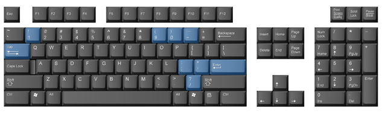

Project 1: Learning the Alphanumeric and Symbol Keys
Some Other Useful Punctuation, Symbol, and Service Keys
You are now going to learn some of the service keys as well as some punctuation and symbol keys on the keyboard.

The Apostrophe (’) Key
The apostrophe key is used in contractions and to show possession.
- possession: Tom’s motorcycle is red.
contraction: Don’t drive too fast.
The apostrophe key is struck by moving the semi finger sideways and to the right. Practise typing the path from the semi key to the apostrophe key several times.
The Colon (:) Key
The colon is typed by holding the left-hand Shift key down while striking the semi key. Because two keys are needed to type the colon, you may find that you need to type a bit slower, as with all the characters involving more than one key.
A colon is followed by one space and is used to introduce a list or series of items.
The Quotation Mark (“) Key
Quotation marks are used to signal direct quotations. Quotation marks should not be separated from the quoted text by a space. The closing quotation mark always follows the end punctuation in a piece of quoted text. The quotation mark is typed by anchoring on the J key, holding down the left Shift key, and striking the apostrophe key. This will require a right sideways reach from the semi key with your little finger.
The Question Mark (?) Key
The question mark is used to end a sentence that asks a question. Like the period and colon, a question mark is followed by one space. However, if the question is a quote, the closing quotation mark will immediately follow the question mark.
- Examples: Did Martin pass his apprenticeship exam?
Sharon asked, “Did Martin pass his apprenticeship exam?”
The question mark is typed by making a natural downward reach with the semi finger while anchoring on the J key.
Follow through Practice 7 to practise the apostrophe, colon, quotation marks, and question mark keys. Remember you should always be reviewing keys already covered, as well as practising proper technique.
Apostrophe (’), Colon (:), Quotation Mark (“), and Question Mark (?)
The apostrophe key uses the semicolon finger (pinky) on your right hand.
;;; ’;; ;;’Jan’s it’s we’ll your’s they’re
The colon key uses the semicolon finger (pinky) on your right hand. You must press the Shift key with your left hand and the semicolon key to make a colon. Space once after a colon.
;;; ::: ;;: :;; Ms. Lia: Dear Mr. Mai: Remember to buy school supplies: paper, pens, and a calculator.
Quotation marks are found on the apostrophe key. Remember to press the Shift key with your left hand while pressing the apostrophe with your pinky finger on your right hand. Quotation marks signal direct quotations or dialogue.
“How are you today?” asked the instructor.
Sharon asked, “Did Martin pass his apprenticeship exam?”
The question mark key uses the semi colon finger (pinky) on your right hand. You must press the Shift key with your left hand and then tap the question mark key to get a question mark. The question mark is followed by one space.
;;; ??? ;?? ;?? Now? How? Who? Why? Where? When?
Did Martin pass his apprenticeship exam?
Have you taken a break lately?